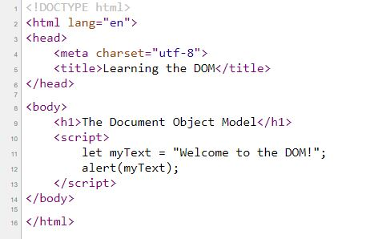
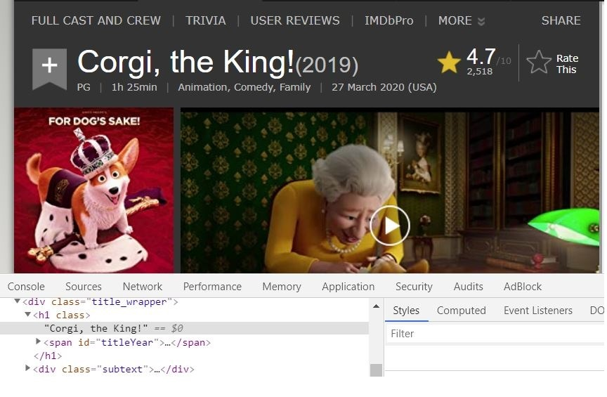

HTML vs CSS
An analogy to explain the differences between HTML and CSS could be a painting.
The HTML is
represented
by the canvas where you draw the elements you are going to paint. The drawing provides guidelines for
the painter to follow.
CSS is the set of colors and tools the
painter is going to use to bring his sketch alive: acrylics or oils paints, colors needed, type of
brushes to achive a particular effects and so on.
Control Flow & Loops: everyday life examples
The control flow is the order in which the computer executes statements in a
script.
Usually when code runs, it starts from the first line to the last one, but if the computer
bumps into some program structure, like conditionals and loops, the order of execution changes.

A conditional statement allows you to carry out an action based on a condition.
If statement : the code is executed if a condition is true.
If it’s raining, take your umbrella!
If...else statement : else statement is executed if the condition is false.
If the light in the control panel of the oven turn off, put the food into the oven, otherwise
wait.
If..else if..else statement : this statement specifies a new condition if the first
condition is false.
If your body temperature is > 40°C go to the hospital, else if it's > 37°C take
some medicine, else take some rest.
A loop allows you to repeat an action a certain number of times. Different kinds of loop
mechanisms enable you to define the start and the end of a loop.
For statement : the loop repeats until a specified condition evaluates to false.
Go through each item on a grocery list until all the items have been stricken off and there is
nothing more left.
Do...while statement : is always executed once before the condition is checked and the
loop repeats until a specified condition evaluates to false.
Keep your glasses on, while you are reading a book.
While statement : executes its statements as long as a specified condition evaluates to
true.
While the glass is empty, pur water.
The DOM: what is it and how interact with it?
The DOM stands for “Document Object Model” and it’s created from the Browser when a page
is loaded.
It’s separated into 3 different parts: Core DOM, XML DOM, HTML DOM.
The HTML DOM is an object representation, an interface to an HTML document.
It is structured as a tree of Objects and each element in the DOM is called “node”. Example of
nodes are
elements, attributes, text content, comments, document-related stuff and other things; this list does
not include pseudo-elements (e.g. ::after) and hidden elements (e.g. with display: none).
Interacting with the DOM
The DOM allows JavaScript to access the text content and elements of the website document as
objects
by using properties and methods.
When you're interested in a particular DOM node, Inspect is an easy and fast way to open
DevTools and
investigate that node.
The below images show how the DOM can be modified by client-side Javascript:
- We start by typing document.body into the console:
- We can type document.body.style.backgroundColor = 'color'; to change the background color of the body object:
- If we type in the console document.body or we go to the Elements tab, we can see that the DOM has changed:
- But if we right-click on the page and we select “View Page Source”, we can see that the source of the website does not contain the new background color added via Javascript. 
You can also edit, hide or move the nodes by doing double-click on the content you want to change, or drag it if you want to move it, and see how those changes affect the page.
Before... and After...
Accessing data from arrays and objects: what's the difference?
Arrays
Each item in an array is identified by a number called its index.
let myFlowersArray = [“orchid”, ”rose”, ”lily”];
Arrays use zero-based indexing, so the first element in an array is element 0.
orchid: index 0; rose: index 1; lily: index 2;
You can access a particular element by passing its index to the array name within square brackets.
myFlowersArray[0]; // orchid
myFlowersArray[1]; // rose
myFlowersArray[2]; // lily
Objects
An object is created by using figure brackets {} with a list of properties.
let movie = { "name": “Pride & Prejudice”, "year-released": 2005, "director": “Joe Wright”
}
You can access a particular property by using dot notation or square brackets.
console.log(movie.name); → output: Pride & Prejudice
console.log(movie.[‘director’]); → output: Joe Wright
Functions: why they are useful
Functions are reusable blocks of code that groups together a set of statements to perform a specific task. A code inside functions is run whenever that function is called. (see example below).
They are useful when you have a few lines of code that needs to be used several times.
Also, in Javascript, a function is an object, that means that we can assign it to variables,
to array elements and to other objects; we can pass it as parameter into another
function, or it can be returned from another function (see example below).